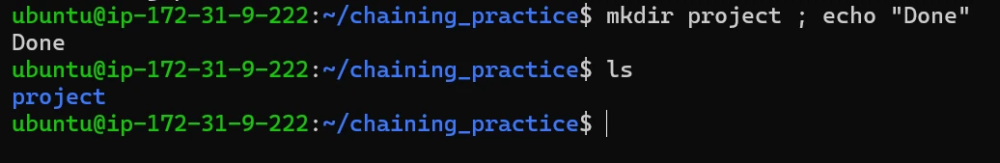
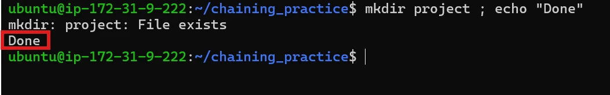
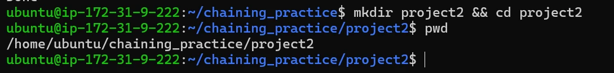
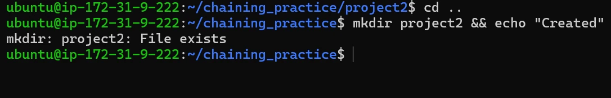
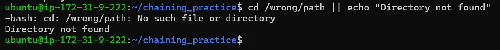

Essential Commands: Command Chaining
Why chain commands?
Normally we run commands one at a time:
mkdir project
cd project
touch app.txtLinux lets us put them together on one line:
mkdir project && cd project && touch app.txtThis is command chaining. The operator between two commands decides whether the next command should run.
; · anyway
Run the next command no matter what happened before.
&& · on success
Run the next command only if the previous one succeeded.
|| · on failure
Run the next command only if the previous one failed.
0 means success, anything else means failure. See the last one with echo $?.; · run commands one after another
Sometimes we just want to say: “Run this, then run that. I don’t care whether the first one worked.”
command1 ; command2Try it
mkdir chaining_practice
cd chaining_practice
mkdir project ; echo "Done"
project doesn’t exist, so Linux creates it, then echo "Done" runs.Now run the same line again:

mkdir fails with “File exists”… and Done still prints.mkdir failed because the folder already exists, but echo "Done" still ran. That is exactly what ; means.
&& · run only if the previous command succeeds
Now we have a different requirement: create a directory → enter it → create a file. If creating the directory fails, we don’t want to continue.
command1 && command2 # command2 runs only if command1 succeeds&& is a gate: it only opens when the command before it succeeds.See both outcomes
mkdir project2 && cd project2 # works: you are now inside project2
pwd # check where you are
cd .. # go back
mkdir project2 && echo "Created" # fails: project2 exists, so "Created" never prints
mkdir succeeded, so cd ran: pwd confirms you’re inside project2.
mkdir failed, so && stopped the chain: “Created” never prints.Several && in a row
mkdir project3 && cd project3 && touch app.txtEach command now depends on the one before it. The chain stops at the first failure.
| Situation | mkdir project3 | cd project3 | touch app.txt |
|---|---|---|---|
| Everything works | ✅ success | ✅ runs | ✅ runs |
| First command fails | ❌ fail | ⛔ not run | ⛔ not run |
| Second command fails | ✅ success | ❌ fail | ⛔ not run |
&&, a failed cd would leave you in the wrong folder, and the next command (say, a delete) would run there. && keeps a broken step from causing damage further down.|| · run only if the previous command fails
Sometimes we want: “Try the first command. If it fails, do something else.” That is a fallback.
command1 || command2 # command2 runs only if command1 failscd /wrong/path || echo "Directory not found"
cd failed, so || ran the fallback echo.The three operators, side by side
| Operator | Next command runs when… | Read it as | Typical use |
|---|---|---|---|
; | always | “then” | independent steps |
&& | previous succeeded (exit 0) | “and then, if OK” | steps that depend on each other |
|| | previous failed (exit ≠ 0) | “or else” | fallbacks and error messages |
Combining chains
You can mix operators to get an “if it worked / if it didn’t” pattern:
mkdir reports && echo "Folder created" || echo "Could not create folder"- 1mkdir succeeds
&&letsecho "Folder created"run. That echo succeeds, so||skips the last part. - 2mkdir fails
&&skips the first echo; the failure reaches||, so “Could not create folder” prints.
A && B || C, C also runs if B fails. When the middle step can fail, use a real if statement in a script.A practical workflow
Set up a project folder, enter it, create starter files and confirm, stopping at the first problem:
One line, safe at every step
mkdir -p ~/apps/demo && cd ~/apps/demo && touch app.py README.md && ls -l || echo "Setup failed. Check the step above."git pull && pip install -r requirements.txt && systemctl restart app. If the pull fails, nothing restarts on half-updated code.Key terms
- Command chaining
- Writing several commands on one line, joined by operators that control whether each next command runs.
- Exit status
- The number a command returns when it finishes: 0 = success, non-zero = failure. Shown by
echo $?. - ; (semicolon)
- Runs the next command regardless of whether the previous one succeeded.
- && (AND operator)
- Runs the next command only if the previous command succeeded.
- || (OR operator)
- Runs the next command only if the previous command failed. Used for fallbacks.
Self-check
Pick an answer. You’ll see right away whether it’s correct and why.
Which operator runs the next command no matter what?
;&&|||
; just runs commands in sequence and ignores success or failure.
project2 already exists. What does mkdir project2 && echo "Created" print?
- Only “Created”
- Only the mkdir error
- The error and then “Created”
- Nothing at all
mkdir fails and prints its error, so && stops the chain. “Created” never runs.
In mkdir a && cd a && touch x, the cd fails. What happens to touch x?
- It runs in folder a
- It runs in the current folder
- It does not run
- It runs twice
Every && needs the step before it to succeed. The chain stops at the first failure.
You want a message only when cd /data fails. Which line is right?
cd /data ; echo "missing"cd /data && echo "missing"echo "missing" || cd /datacd /data || echo "missing"
|| runs the right-hand side only when the left-hand side fails.
What exit status means “success”?
- 1
- 0
- -1
- Any positive number
0 means success; any non-zero value means some kind of failure.
In A && B || C, when does C run?
- Only when A fails
- Only when B fails
- When A fails, or when A succeeds but B fails
- Never
C sees the result of whatever ran last. A failure in either A or B reaches ||, so this is not a true if/else.
All of it, in one sentence
; means then, anyway, && means then, only if it worked, and || means otherwise. Together they let one line of shell run a whole workflow safely.
— Vishwa Mohan